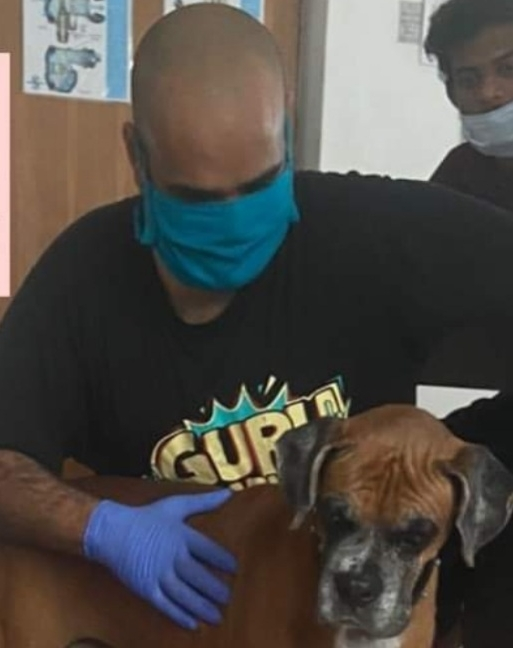

 Hey! Welcome. Myself anirudh chellappa (அனிருத் செல்லப்பா)
I am a graduate student at the National Institute of Mental Health and Neuro Sciences (NIMHANS), Bangalore.
I study metabolic phenotypes through analysis of 'omic data and computational modeling.
I'm excited about genetic- and metabolic- mechanisms that drive:
Interests: computational biology, genetics, metabolism
i) cellular decision making, ii) public health outcomes.